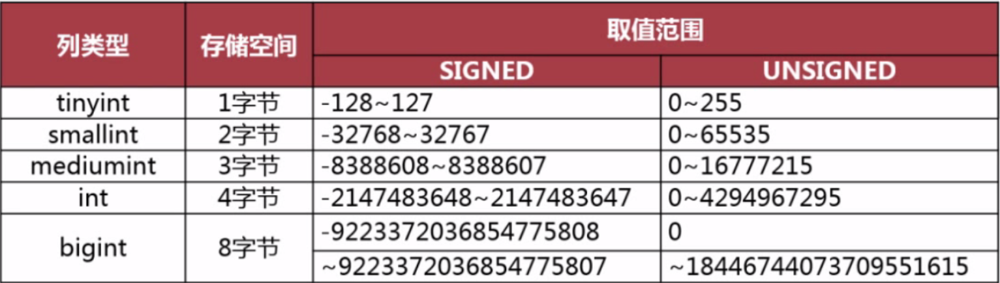
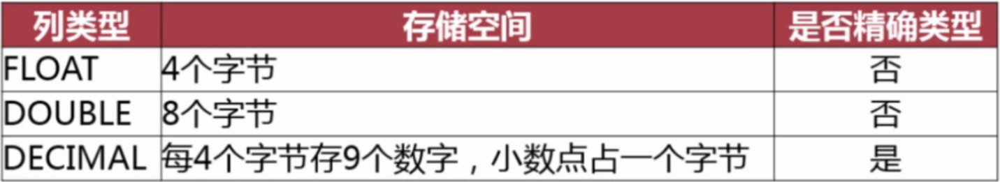

范式
1NF
表的每一个字段都是最小单元，不可再分。
实践：数据库设计画ER图时对实体做好分析可满足1NF。
2NF
满足1NF，且表中的字段必须完全依赖于全部主键而非部分主键。
实践：一张表只设一个主键，若该表满足1NF，则一定满足2NF。
3NF
满足2NF，且非主键外的所有字段必须互不依赖，即消除了依赖传递，例如：主键决定字段A，字段A决定字段B，则主键可决定字段B，这就是依赖传递。
实践：若存在相互依赖的字段，则它们应单独在一张表中，比如前面例子中字段A, B应单独在一张表中。
BCNF
满足3NF，且每张表中只有一个唯一索引（一般为主键）。
实践：MySQL中一般不用。以user表为例，假设该user表有手机号tel字段，每个人的手机号都是唯一的，显然用手机号做主键是不合适的，此时一般还是需要自定义一个自增id。这里就有两个唯一索引了，不满足BCNF。那么为了满足BCNF，我们需要单独建表存储一个id号和手机号tel字段，这样查询性能会降低。
4NF
满足3NF，且消除表中字段的多值依赖。
数据库结构设计流程
- 需求分析：全面了解产品设计的存储需求，数据处理需求，数据的安全性和完整性。
- 逻辑设计：设计数据的逻辑存储结构。数据实体之间的逻辑关系，解决数据冗余和数据维护异常。
- 物理设计：根据所使用的数据库特点进行表结构设计。
- 维护优化：根据实际情况对索引、存储结构等优化。
注意：有时候完全符合范式化的设计并不能得到良好的SQL查询性能，因此需要反范式化设计。即为了性能和读取效率而适当对范式进行违反，允许存在少量的数据冗余（空间换时间）。在进行数据库逻辑设计时，应当考虑以后如何使用表，可能有哪些SQL语句，进而适当进行反范式化设计。
范式与反范式的优缺点
范式化设计
优点
- 减少数据冗余，节约存储空间。
- 消除插入、更新和删除异常。若表中的某个实体依赖于另一个实体而存在：
- 插入异常：那么插入数据时就会出现异常。
- 更新异常：若更改表中某个实体的某一属性时，需要对多行进行更新。
- 删除异常：若删除表中的某一实体则会导致其他实体的存在性出现问题。
缺点
- 范式化设计的表通常更多，查询需要对多个表进行关联。
- 更难进行索引优化。
反范式化设计
优点
- 可以减少表的关联，最差也是对聚簇索引的全表扫描（顺序IO），而范式化设计中对表的关联操作会用到临时表，性能差。
- 可以更好的进行索引优化，比如使用覆盖索引。
缺点
- 存在数据冗余及数据维护异常。
- 对数据的修改需要更多的成本。
物理设计(表结构设计)
主要包括：
- 定义数据库、表及字段的命名规范。
- 为每张表选择合适的存储引擎。
- 为表中的字段选择合适的数据类型。
- 建立数据库结构。
数据类型选择
- 当一个列可以选择多种数据类型时，应该优先考虑数字类型，其次是日期或二进制类型，最后才是字符类型。这是因为字符串的比较比其他几种类型更慢。
- 应该尽可能使数据类型占用的空间较小。数据类型越小，一页能够存储的行记录越多，磁盘IO越小，查找也越快。
整数类型

实数类型
float和double并不完全精确，decimal是精确的，但是decimal占用存储空间会多一点。decimal应用于对数据精度要求高的场景，如价格。

字符类型
varchar：用于存储变长字符串，定义时以字符个数为单位，只占用必要的存储空间。当定义长度小于255时，行记录中只占用一个额外字节记录字符串长度，当大于255时则要占用两个额外字节记录字符串长度。适用场景：
- 字符串的最大长度比平均长度大很多的场景。
- 字符串很少被更新。因为varchar是变长的，经常更新字符串可能会导致频繁的页分裂。
- 需要使用变长字符集如UTF-8时。
char：定长字符串，最大宽度为255个字符。字符串存储在char类型的列中会自动删除末尾的空格。适用场景：
- 适合存储长度都差不多的字符串，例如MD5值、手机号等。
- 短字符串。
- 适合存储经常更新的字符串。
日期类型
- datetime：以yyyy-mm-dd hh:mm:ss格式存储日期时间，占8个字节，与时区无关，时间范围从1000-01-01 00:00:00到9999-12-31 23:59:59。如果需要保存微秒，则需要指定宽度，最大为6，如datetime(6)。
- timestamp：存储了从格林尼治时间1970-01-01到当前时间的秒数，以yyyy-mm-dd hh:mm:ss[.fraction]格式显示，占用4个字节，时间范围到2038-01-19。timestamp类型显示依赖于所指定的时区。另外，在行数据更新时，timestamp列可以自动更新。
- date：只存储日期部分。占用3个字节，时间范围从1000-01-01到9999-12-31。
- time：只存储时间部分。
注意事项：
- 不要使用字符串类型存储日期时间数据。因为使用日期类型占用空间比字符串类型更小，日期时间类型在查找过滤时比字符串比较更快，MySQL对日期时间类型配套了丰富的处理函数。